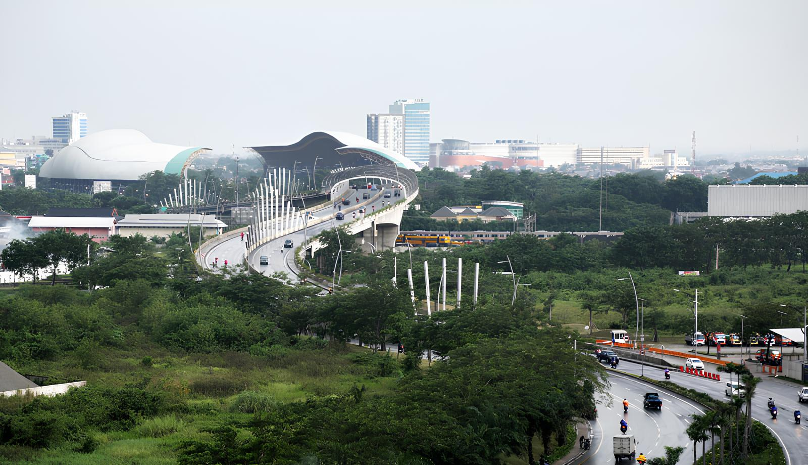
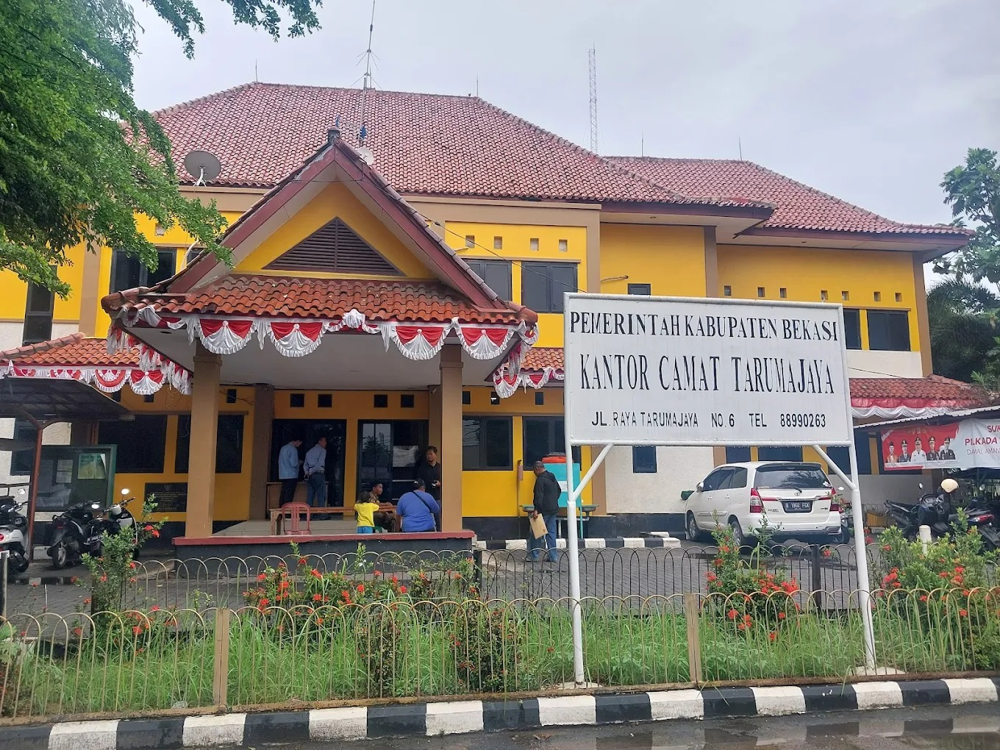
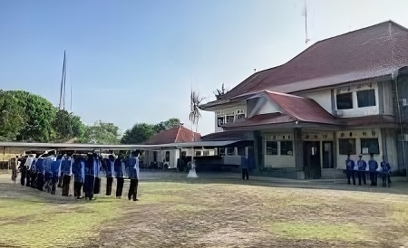
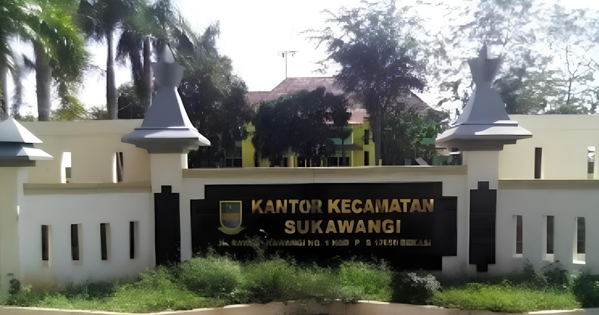
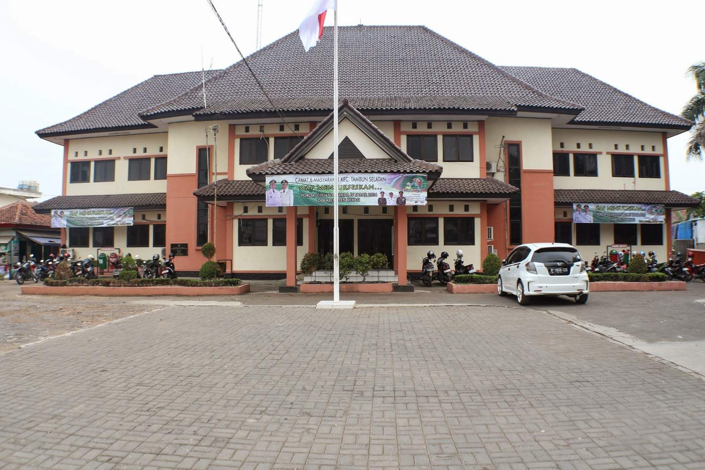
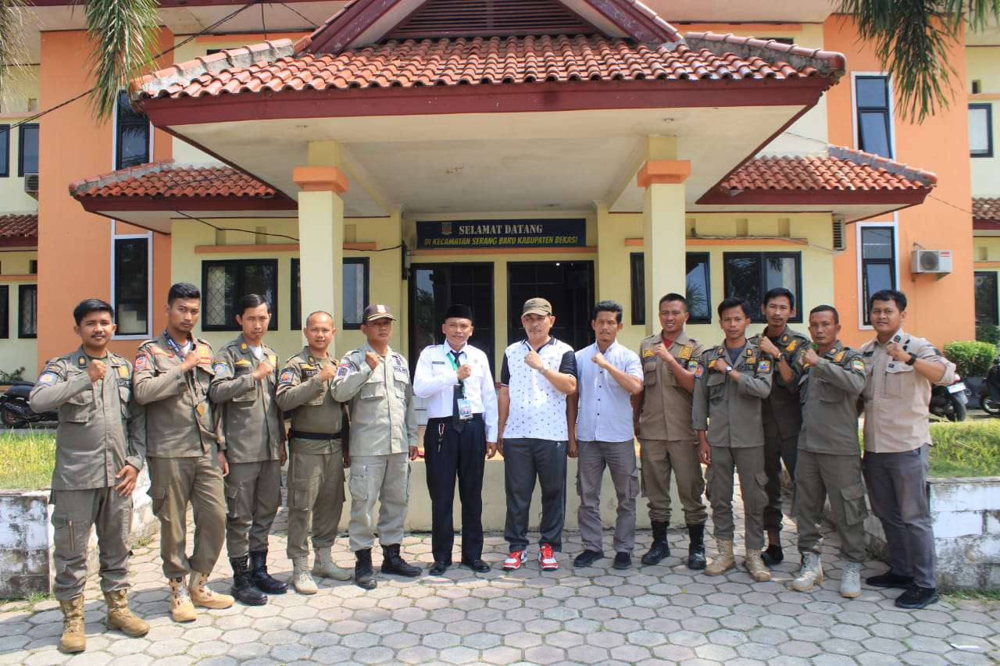
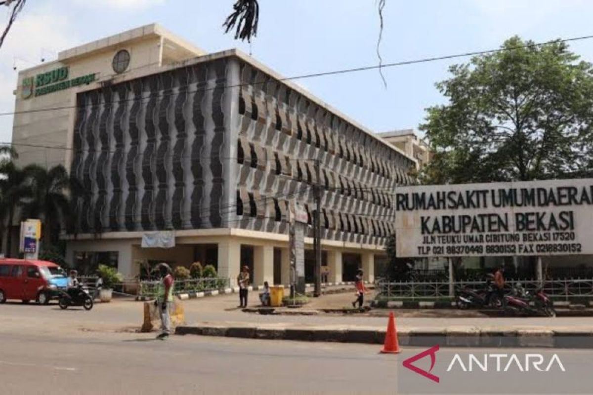
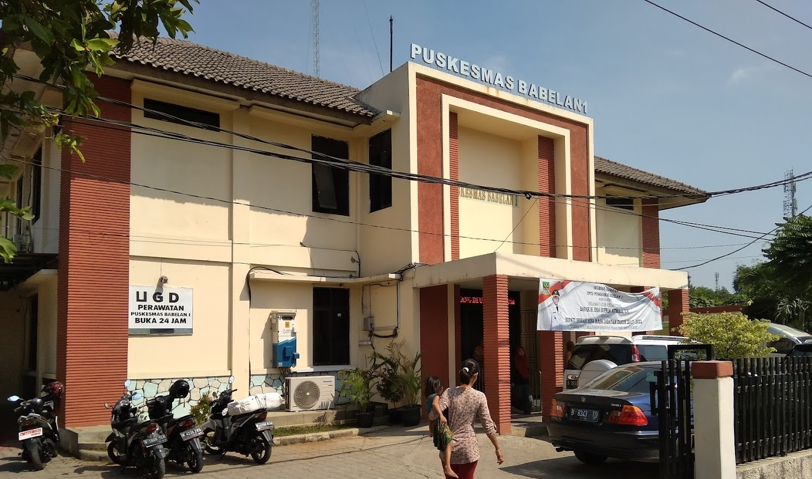
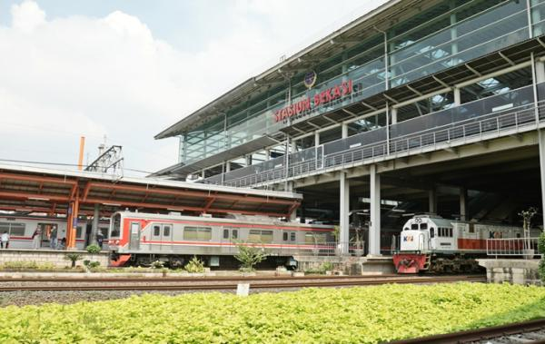
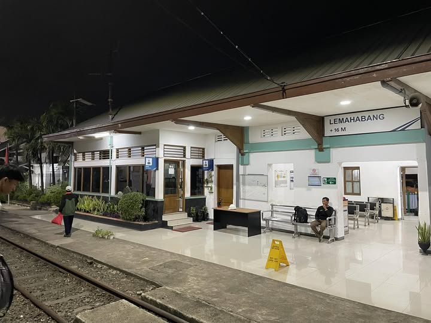

Kabupaten Bekasi merupakan salah satu wilayah strategis di Provinsi Jawa Barat yang berbatasan langsung dengan DKI Jakarta dan menjadi bagian dari kawasan metropolitan Jabodetabek. Dikenal sebagai pusat industri nasional, khususnya di kawasan Cikarang, Kabupaten Bekasi berkembang pesat dengan dukungan infrastruktur modern serta kawasan permukiman yang terus meluas. Di sisi lain, wilayah pesisir seperti Muara Gembong menghadirkan nuansa berbeda yang memperkaya karakter wilayahnya.
Secara administratif, Kabupaten Bekasi terdiri atas kecamatan Tambun Selatan, Tambun Utara, Babelan, Tarumajaya, Cabangbungin, Muaragembong, Cibitung, Cikarang Barat, Cikarang Selatan, Cikarang Timur, Cikarang Utara, Cikarang Pusat, Setu, Serang Baru, Bojongmangu, Kedungwaringin, Karangbahagia, Pebayuran, Sukakarya, Sukatani, dan Sukawangi. Selain itu, wilayah ini didukung oleh jaringan transportasi yang cukup lengkap seperti jalan tol Jakarta hingga Cikampek dan jalur kereta komuter yang menghubungkan Bekasi dengan Jakarta dan sekitarnya.
Dengan jumlah penduduk yang besar dan pertumbuhan wilayah yang cepat, Kabupaten Bekasi menunjukkan dinamika perkembangan yang signifikan, baik dari sisi ekonomi, infrastruktur, maupun penggunaan lahannya yang terus mengalami perubahan.









Kepadatan penduduk menunjukkan jumlah penduduk dalam suatu wilayah. Berdasarkan peta kepadatan penduduk Kabupaten Bekasi, tingkat kepadatan dibagi menjadi tiga kategori, yaitu rendah (0–2.022 orang), sedang (2.022–4.589 orang), dan tinggi (4.589–765.000 orang). Persebaran penduduk terlihat tidak merata, di mana wilayah barat hingga tengah seperti Tambun, Cibitung, dan Cikarang termasuk dalam kategori kepadatan tinggi karena didukung oleh kawasan industri, permukiman, serta akses transportasi yang baik. Sementara itu, wilayah timur dan utara cenderung memiliki kepadatan lebih rendah karena masih didominasi oleh lahan pertanian dan kawasan pesisir.